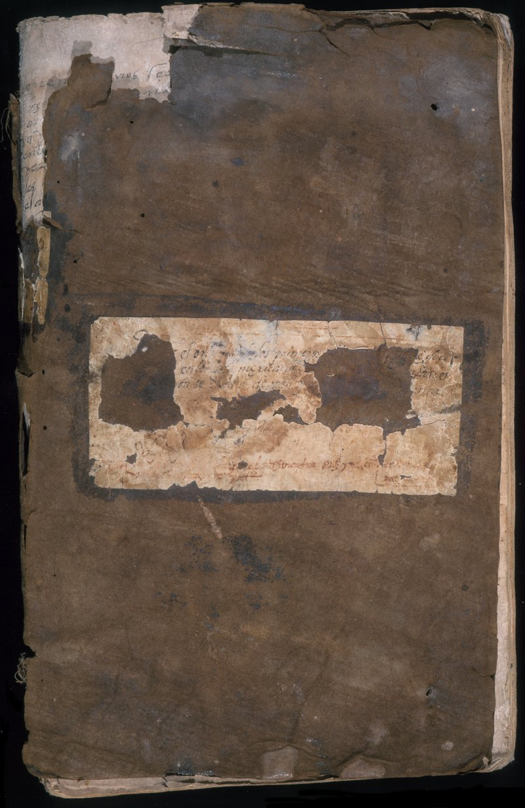

Christianizing the Nahua


Sahagún’s collection of Nahuatl sermons for Sunday mass and Saints’ days is, according to scholar Frederick Schwaller, “a careful interweaving of Aztec moral philosophy and belief with Catholic dogma and belief.” Sahagún’s need to make Christianity intelligible to the Nahuas led him to tailor both the content and the language of the text. The difficulties he confronted are evident in his Spanish marginal commentaries to the main text, where he reflects on how to make the message more effective.
Newberry Library: Vault oversize Ayer MS 1485